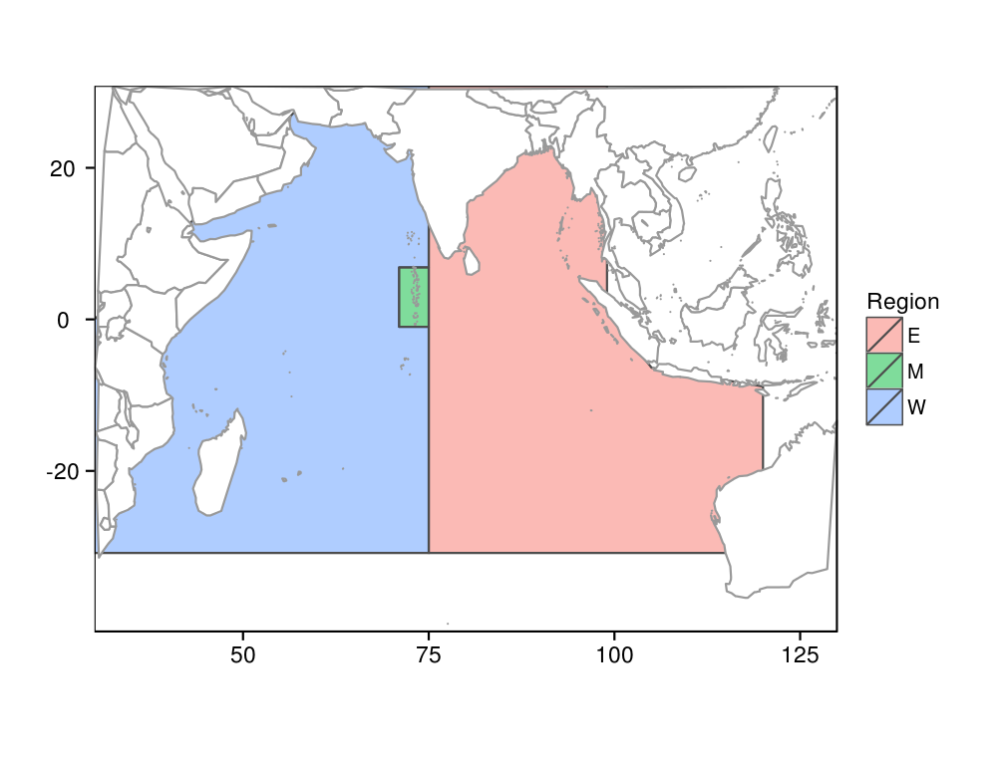

source('../../common.R',local=T)
The following convention is used for assigning symbols in the following model equations: Greek lower case letters (e.g. ) for model parameters, Roman capital letters (e.g. ) for model variables, and Roman lower case letters for variable or parameter array subscripts (e.g. , ). Using this convention means that in some instances model parameters are given different symbols that usual. However, it has the advantage of clearly distinguishing model parameters (which are independent of other parameters or variables and are usually estimated) from model variables (which are dependent upon parameter values).
The subscript for time, , is usually omitted from the model equations below except where it is necessary to be explicit regarding the time step involved.
1 Dimensions
Several dimensions are used to partition aspects of the model (e.g. fish numbers, catches). See Table 1 for symbols used for each.
The model uses a quarterly, i.e. three month, time step (). Each time step, , has an associated calendar year () and calendar quarter ().
There are three regions (r), West (we), Maldives (ma) and East (ea) (Figure 1). The term "region" is used in preference to "area" because using the latter would confound the a subscript which is also used for age. The three regions were mostly defined based on difference is the main fishing gears used in each. There is little information available on biological stock definitions for Indian Ocean skipjack tuna. However, based on what is available, , suggested four regions, in which the western region is divided into northern and southern regions at the equator. Given the nature of the catch distribution and resolution of available data, this four region definition should be relatively straightforward to use in future revisions.
Fish recruit to the model in each quarter and the model keeps track of their numbers by their age (), in quarters up to six years i.e. . Fish size () is represented in forty, 2cm bins, .
Four fishing methods () are defined : purse seine (), pole and line (), gill net () and other (). There are differences in the size distribution of free-school and associated-school purse seine sets. However, given the low proportion of free-school sets, particularly in recent years, it was considered unnecessary to model these subcomponents separately.
| Time | |
|---|---|
| Time step | |
| Calendar year | |
| Calendar quarter; 1 = Jan-Mar | |
| Regions | |
| Region subscript | |
| West region | |
| Maldives region | |
| East region | |
| Fish age and size | |
| Fish age group | |
| Maximum age in the model | |
| Fish size group | |
| Largest size group in the model | |
| Fishing methods | |
| Fishing method subscript | |
| Purse seine | |
| Pole and line | |
| Gill net | |
| Other |
regions <- read.table('../../data/area-polygons.txt',header=T)
names(regions) <- c('region','lat','lon')
print(
ggplot(subset(map_data("world"),long>30 & long<130 & lat<30 & lat>-40)) +
geom_polygon(data=regions,aes(x=lon,y=lat,fill=region),colour='grey30',alpha=0.5) +
geom_polygon(aes(x=long, y=lat, group=group),fill='white',colour='grey60') +
scale_y_continuous('',expand=c(0,0)) +
scale_x_continuous('',expand=c(0,0)) +
coord_map('mercator') +
labs(fill='Region')
)

2 Fish
2.1 Numbers
Fish numbers are partitioned by region, age and size, . In each quarter, recruitment to the model and ageing occur as follows.
The maximum age group, , accumulates fish from the previous age, ,
For ages to , simple ageing occurs,
For age , recruitment occurs,
where is the number of fish recruiting to age 0 in region at size .
Numbers are updated by applying growth, survival, exploitation and movement. The numbers in each region, in each age class and size class are determined by summing over all regions and size classes,
where is the growth transition matrix, is the natural survival rate, is the exploitation rate, and is the movement transition matrix (all described below).
2.2 Length, weight and maturity
The length of fish of size is the midpoint of the 2mm bin size,
The weight of fish of size is modelled as an exponential curve,
Currently, the model assumes that the parameters of the length-weight relationship are the same in the three regions. These seems a reasonable assumption, but it is possible that condition factors consistently vary among regions, in which case these parameters could be made to vary by region i.e.
The proportion of fish of size that are mature is modelled as a logistic curve,
Currently, the model assumes that the parameters of the maturity curve are the same in all three regions but could be made to vary by region i.e . In addition, maturity could be modelled as a function of age, rather than size, i.e. .
2.3 Spawning and recruitment
The proportion of mature fish that spawn in each quarter is allowed to vary according to a quarterly parameter, . Currently, this parameter is the same for all regions. Evidence of regional differences in spawning seasonality would suggest making these parameters vary by region.
The biomass of mature fish is a function of the number of fish by age and size and the maturity and weight ogives by size,
We refer to this varable as the biomass of spawners and is used as the basis for determing stock status, .
Recruitment occurs in each quarter and is partitioned by region and size, . The total number of eggs is based on the total spawning biomass in the previous quarter,
where is the proportion of fish that are mature at size , is the weight of fish at size , and is the proportion of fish that spawn in quarter .
The total number of eggs determines the total number of recruits over all three regions, using the Beverton-Holt stock recruitment function,
where is steepness, and are the respectively the number of recruit and eggs in the absence of fishing, and is the recruitment deviation at time t which is lognormally distributed with mean of 1 and standard deviation of .
This total recruitment is distributed across the three regions,
where is the proportion of recruits which recruit into region and is the proportion of recruits of size which is based on a normal distribution with mean, and standard deviation ,
2.4 Natural mortality
The instantaneous rate of natural mortality at size is modelled as a function of weight at size using the form of Lorenzen,
To prevent going to very high levels at low , is restricted to be a maximum of (i.e. the mortality at size bin 10, i.e. length of 21cm).
The survival rate in one quarter is,
2.5 Growth
Growth is described using a size transition matrix which is calculated based on the von Bertallanfy growth function. The mean increment in one quarter is,
Variation in growth is modelled as a normal distribution with a constant standard deviation, , and a coefficient of variation, , on the increment. The standard deviation of the growth increment for a fish of size is thus,
The proportion of fish growing from size to size in one quarter is thus,
At present, it is assumed that growth is the same in all three regions. It is likely that in fact growth differs between regions in which case some, or all, of the growth parameters could vary by region e.g , .
An alternative to the von Bertallanfy function would be to use the two-stanza growth model and parameter estimates of Everson et al (2012, 2014).
2.6 Movement
The proportion of fish moving from region to region in one quarter is described by the movement matrix defined by six off-diagonal parameters,
There could be separate movement parameters for each age (or size) e.g. , or more simply, the relative proportion of fish moving could vary by age (or size).
In summary, at present, whilst the model keeps account of fish numbers by region, only two of the biological characteristics of the stock vary by region: the proportion of recruitment going to each and the movement between each. As noted above, many of the model's parameters could be made to vary by region but this is likely to be of little value without information with which to inform how much those parameters should vary by region.
3 Fishing
Selectivity is modelled as a function of length using a piecewise spline with knots at every ten cm from 20cm to 80cm.
Catches are compiled by region and method, from IOTC data. The biomass that is vulnerable to each method, in each region , is calculated by summing over ages and sizes,
where is the relative selectivity of method for fish of size, .
The exploitation rate in region of method is then,